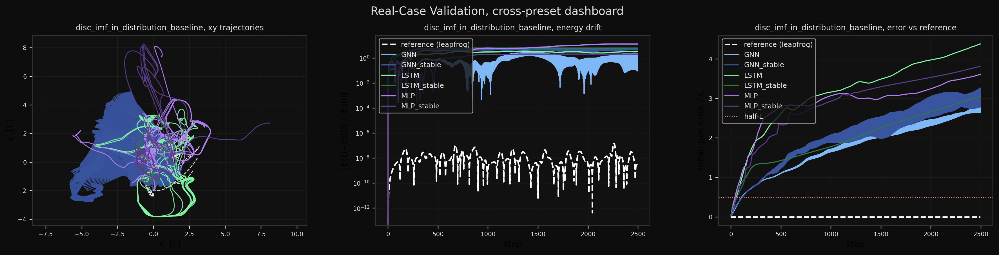

Home Interactive Animations Plots N=10 N=25 N=50 N=100 N = 10
All artefacts for the N=10 training body count — dashboard, then every
preset's full plot set (trajectory, predicted-vs-reference, small-body
error, energy, error-vs-reference) for all six model variants.
Source tables: N10_audit.md .
Validation dashboard 
Preset Disc Imf In Distribution Baseline Preset Full Solar System Preset Inner Planets Preset Jupiter Galileans energy error_vs_reference predicted_vs_book_GNN predicted_vs_book_GNN_stable predicted_vs_book_LSTM predicted_vs_book_LSTM_stable predicted_vs_book_MLP predicted_vs_book_MLP_stable small_bodies_vs_book_GNN small_bodies_vs_book_GNN_stable small_bodies_vs_book_LSTM small_bodies_vs_book_LSTM_stable small_bodies_vs_book_MLP small_bodies_vs_book_MLP_stable interactive ↗ trajectory_GNN interactive ↗ trajectory_GNN_stable interactive ↗ trajectory_LSTM interactive ↗ trajectory_LSTM_stable interactive ↗ trajectory_MLP interactive ↗ trajectory_MLP_stable Preset Solar System Extended energy error_vs_reference predicted_vs_book_GNN predicted_vs_book_GNN_stable predicted_vs_book_LSTM predicted_vs_book_LSTM_stable predicted_vs_book_MLP predicted_vs_book_MLP_stable small_bodies_vs_book_GNN small_bodies_vs_book_GNN_stable small_bodies_vs_book_LSTM small_bodies_vs_book_LSTM_stable small_bodies_vs_book_MLP small_bodies_vs_book_MLP_stable interactive ↗ trajectory_GNN interactive ↗ trajectory_GNN_stable interactive ↗ trajectory_LSTM interactive ↗ trajectory_LSTM_stable interactive ↗ trajectory_MLP interactive ↗ trajectory_MLP_stable Preset Sun Earth Only energy error_vs_reference predicted_vs_book_GNN predicted_vs_book_GNN_stable predicted_vs_book_LSTM predicted_vs_book_LSTM_stable predicted_vs_book_MLP predicted_vs_book_MLP_stable small_bodies_vs_book_GNN small_bodies_vs_book_GNN_stable small_bodies_vs_book_LSTM small_bodies_vs_book_LSTM_stable small_bodies_vs_book_MLP small_bodies_vs_book_MLP_stable interactive ↗ trajectory_GNN interactive ↗ trajectory_GNN_stable interactive ↗ trajectory_LSTM interactive ↗ trajectory_LSTM_stable interactive ↗ trajectory_MLP interactive ↗ trajectory_MLP_stable Preset Sun Planets Moon energy error_vs_reference predicted_vs_book_GNN predicted_vs_book_GNN_stable predicted_vs_book_LSTM predicted_vs_book_LSTM_stable predicted_vs_book_MLP predicted_vs_book_MLP_stable small_bodies_vs_book_GNN small_bodies_vs_book_GNN_stable small_bodies_vs_book_LSTM small_bodies_vs_book_LSTM_stable small_bodies_vs_book_MLP small_bodies_vs_book_MLP_stable interactive ↗ trajectory_GNN interactive ↗ trajectory_GNN_stable interactive ↗ trajectory_LSTM interactive ↗ trajectory_LSTM_stable interactive ↗ trajectory_MLP interactive ↗ trajectory_MLP_stable